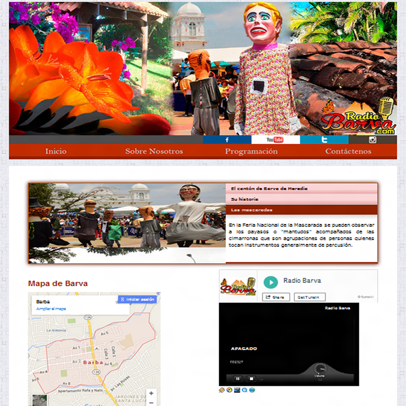

Radio Barva
Es un medio de comunicación comunal que ofrece entretenimiento, compañía, educación y desea compartir lo más hermoso de las tradiciones del folclórico pueblo de Barva de Heredia, Costa Rica.
Nuestro objetivo es compartir criterios a través de programas especiales, tener buenos ratos con música de Costa Rica y el mundo con personas de todas las edades, dar a conocer rasgos únicos de una cultura basada en las tradiciones indígenas y campesinas de esta franja del mundo, situada en la cintura de América.
En la programación encontrará muestras de esa cultura como las cimarronas, mascaradas y los payasos, testimonios de artesanos que a través de los años han mantenido esa linda tradición, músicos que profesionalmente desempeñan su labor, pintores y escultores que han hecho famoso este pueblo.
Compartimos en nuestros programas hermosos lugares turísticos y criterios encontrados sobre economía, política y problemas culturales. Hacemos deportes y ofrecemos la gran gama de música tradicional, nacional, de otras épocas, clásica y también tertuliamos con gente mayor que nos cuenta hermosas historias.
La conservación de la naturaleza es prioridad de Radio Barva.
La idea central es llegar a todos los distritos y barrios con programación en vivo, para que usted pueda compartir con todos no solo en el Blog diseñado para ese fin, sino que también disfrute con amigos lo que piensa. Tiene cabida el gobierno local, la empresa privada, los pequeños empresarios, estudiantes y organizaciones comunales.
Quienes son de Barva y viven fuera del país, pueden ya conocer noticias, escuchar a sus amigos y participar desde cualquier parte del mundo.
Aunado a ello, existen opciones que nos brinden nuevos temas, pronto tendremos apertura a nuevos programas e incursionaremos en el fortalecimiento de los Derechos Humanos.
Radio Barva es suya.
radiobarva.com
